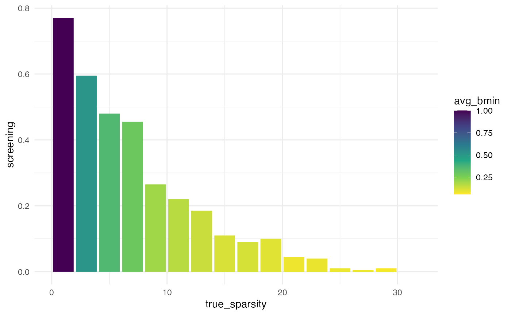
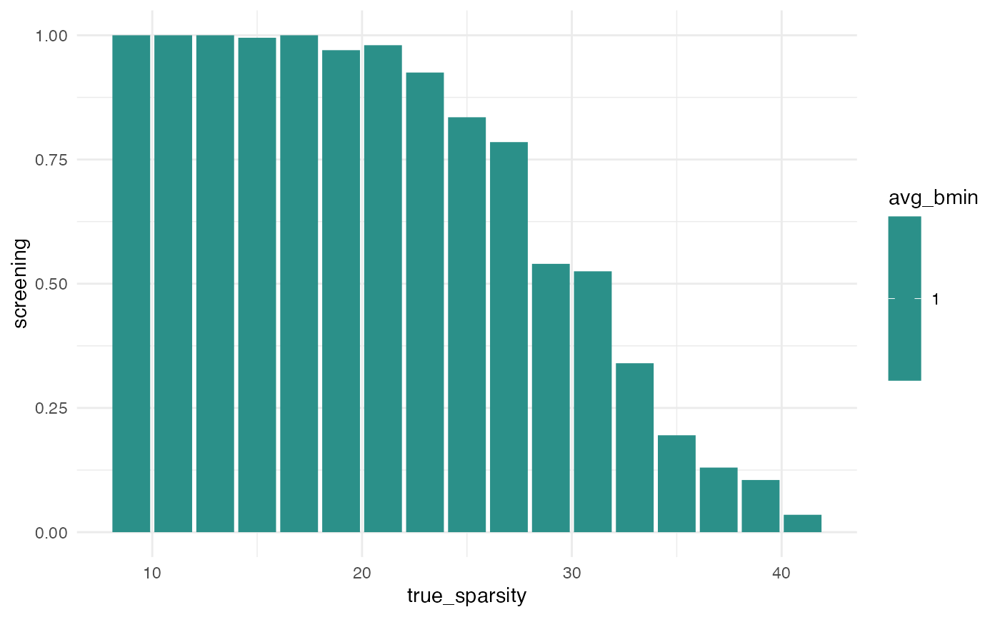

Lasso variable selection
In high-dimensional regression with \(n\) observations, \(p\) predictor variables, and \(p > n\), we cannot fit ordinary least squares. One strategy around this is to bet on sparsity: we assume there is a true (or good enough) linear model with a relatively small number \(s_0 < n\) of nonzero coefficients.
The lasso (1996) can be used to fit a linear model
to high-dimensional data. It typically results in a fit with few nonzero
coefficient estimates. The glmnet package
(2010) is a standard software
implementation that can also use cross-validation to choose the
regularization parameter.
In this vignette we show how to use simcity to simulate
many high-dimensional datasets where the true model is a sparse linear
model, use the lasso with glmnet::cv.glmnet to fit an
estimated model, and then check whether the estimated model has a
certain property we call screening. This means the
selected model’s support is a superset of the true support, i.e. if
selected variables include all the ones with nonzero coefficients in the
true model.
library(simcity)
#> Loading required package: doParallel
#> Loading required package: foreach
#> Loading required package: iterators
#> Loading required package: parallel
#> Loading required package: glmnet
#> Loading required package: Matrix
#> Loaded glmnet 4.1-4
#> Loading required package: hdi
#> Loading required package: scalreg
#> Loading required package: lars
#> Loaded lars 1.3
devtools::load_all() # why tho
#> ℹ Loading simcityA single simulated dataset
First let’s look at one example instance, showing both the true and estimated coefficients:
set.seed(1)
n <- 50
p <- 100
s0 <- 2
one_lasso_fit <- instance_hdr(n, p, s0)
one_lasso_fit |> head()
#> term estimate true_beta
#> 1 (Intercept) 0.1320102 0.000000
#> 2 V1 0.9894033 1.427502
#> 3 V2 -1.5176728 -1.833628
#> 4 V3 0.0000000 0.000000
#> 5 V4 0.0000000 0.000000
#> 6 V5 0.0000000 0.000000Which coefficients are nonzero in the true model?
true_support <- which(one_lasso_fit$true_beta != 0)
true_support
#> [1] 2 3Which coefficients are nonzero in the lasso selected model?
estimated_support <- which(one_lasso_fit$estimate != 0)
estimated_support
#> [1] 1 2 3 80Did the selected model succeed at screening?
Many simulated datasets
We’ll use the simulate_hdr function, but first we’re
going to setup simulation parameters and save some computation by
optionally saving the resulting data and soo it can be re-loaded
later.
n <- 100
p <- 200
s0 <- 5
niters <- 100
sim_results_file <- "./data/lasso-screening.csv"
# Check whether results already saved
if (file.exists(sim_results_file)) {
sim_summary <- read.csv(sim_results_file)
print(paste0(
"Loading saved simulation results with ",
nrow(sim_summary), " iterates"))
} else {
# run simulation
many_lasso_fits <- simulate_hdr(niters, n, p, s0)
sim_summary <- simmary_coefs(many_lasso_fits)
write.csv(sim_summary, sim_results_file)
}
head(sim_summary)
#> screened mse beta_min
#> 1 TRUE 0.002099870 0.871048470
#> 2 FALSE 0.002018456 0.012825806
#> 3 FALSE 0.001987742 0.008152623
#> 4 TRUE 0.003227748 0.963045234
#> 5 FALSE 0.002000449 0.006364354
#> 6 TRUE 0.001400957 0.597323130What was the frequency of screening?
mean(sim_summary$screened)
#> [1] 0.5Was the smallest truly nonzero coefficient different in the cases when screening occurred?
ggplot(sim_summary, aes(screened, beta_min)) +
geom_boxplot() +
theme_minimal()
Sparsity and screening probability
Let’s now compute the rate of screening as a function of the sparsity of the true model, keeping all other parameters fixed.
n <- 100
p <- 200
sparsities <- 1 + 2*0:15
niters <- 200
sim_results_file <- "./data/lasso-screening-sparsity.csv"
# Check whether results already saved
if (file.exists(sim_results_file)) {
sim_summary <- read.csv(sim_results_file)
print(paste0(
"Loading saved simulation results with ",
nrow(sim_summary), " rows"))
} else {
# run simulation
time_start <- Sys.time()
full_results <- purrr::map_dfr(sparsities,
function(s0) {
many_fits <- simulate_hdr(niters, n, p, s0)
sim_summary <- simmary_coefs(many_fits)
sim_summary$sparsity <- s0
sim_summary
})
sim_summary <- full_results |>
group_by(sparsity) |>
summarize(screening = mean(screened),
avg_bmin = mean(beta_min))
time_end <- Sys.time()
print(time_end - time_start)
write.csv(sim_summary, sim_results_file)
}
#> Time difference of 5.272027 mins
sim_summary |>
ggplot(aes(sparsity, screening)) +
geom_col(aes(fill = avg_bmin)) +
scale_fill_viridis_c(direction = -1)
We can see that the frequency of screening decreases as the true
sparsity increases. But also, the true coefficients are (by default)
drawn from a uniform distribution \(U[-2,
2]\). So we can see that the average (over simulation instances)
minimum coefficient, avg_bmin, is also decreasing.
To separate these effects, let’s run the simulation again but pass an
option to generate all nonzero coefficients as a constant
= 1.
sim_results_file <- "./data/lasso-screening-sparsity-bfix1.csv"
# Check whether results already saved
if (file.exists(sim_results_file)) {
sim_bfix_summary <- read.csv(sim_results_file)
print(paste0(
"Loading saved simulation results with ",
nrow(sim_summary), " rows"))
} else {
# run simulation
time_start <- Sys.time()
full_results <- purrr::map_dfr(sparsities,
function(s0) {
many_fits <- simulate_hdr(niters, n, p, s0,
btype = "bfix1")
sim_summary <- simmary_coefs(many_fits)
sim_summary$sparsity <- s0
sim_summary
})
sim_bfix_summary <- full_results |>
group_by(sparsity) |>
summarize(screening = mean(screened),
avg_bmin = mean(beta_min))
time_end <- Sys.time()
print(time_end - time_start)
write.csv(sim_bfix_summary, sim_results_file)
}
#> Time difference of 5.536909 mins
sim_bfix_summary |>
ggplot(aes(sparsity, screening)) +
geom_col(aes(fill = avg_bmin)) +
scale_fill_viridis_c(direction = -1)